Monitor oder Fernseher?
Es läßt sich viel Geld sparen, wenn der vorhandene Fernseher am Computer angeschlossen wird. Doch die meisten Computerbesitzer entschließen sich nach einiger Zeit doch zum Kauf eines zweiten Bildschirmgerätes. Aber soll das nun ein Monitor sein, oder ist ein tragbarer Fernseher zweckmäßiger?
Bildschirmgeräte stehen heute in fast allen Haushalten – in Form eines Fernsehgerätes. Was liegt also für den sparsamen Computerkäufer näher als diese Tatsache zu nutzen und vorläufig auf den Kauf eines Monitors zu verzichten. Nach einigen Tagen treten jedoch meist Probleme auf. Einerseits wollen andere Familienmitglieder lieber Professor Brinkmann sehen als das neueste Actionspiel, andererseits wirkt der große Fernsehbildschirm auf die Dauer ermüdend für die Augen. Und die Bildqualität ist auch nicht gerade die beste – aber warum?
Verdeutlichen wir uns dazu, wie der Computer ein Bild auf den Fernseher bringt. Dem Computer steht der Bildinhalt in Form digitaler Daten zur Verfügung. Diese werden zu einem Videosignal aufbereitet. Das Videosignal wird wiederum zu einem hochfrequenten Antennensignal umgeformt und über die Antennenbuchse dem Fernseher zugeführt. Im Fernsehgerät muß auf komplizierte Weise wieder ein Videosignal zurückgewonnen werden. Dadurch kann sich die Qualität des ursprünglichen Signals erheblich verschlechtern – je nach Qualität des Fernsehgerätes mehr oder weniger.
Der Wunsch entsteht, auch einmal vor einem scharfen Bildschirm zu sitzen. Ein zweites Gerät muß also her. Ein tragbarer Fernseher mit kleinem Bildschirm und Video-Eingang bringt gegenüber dem oben beschriebenen Beispiel schon eine deutliche Verbesserung. Aber auch hier gibt es erhebliche Qualitätsunterschiede.
Probleme bei der Textwiedergabe auf dem Bildschirm
In den Bildern 1 und 2 sehen Sie Text- (40-Zeichen-Darstellung) und Grafikausschnitte von tragbaren Fernsehgeräten mittlerer und guter Qualität. Wie Sie aus den Bildern erkennen können, ist es besonders schwierig, bei der Textwiedergabe scharfe Kanten auf dem Bildschirm zu erzeugen. Woran liegt das? Nun, die Bandbreite des Videoverstärkers im Fernseher ist dafür verantwortlich. Wir wollen Ihnen auch den Zusammenhang erklären. In einem Fernsehgerät werden 15625 Bildzeilen pro Sekunde geschrieben. Nehmen wir an, es sollen 100 senkrechte Striche auf den Bildschirm geschrieben werden. Die Striche sind natürlich auch in jeder einzelnen Zeile enthalten. Dadurch erhöht sich die Frequenz nochmals um den Faktor 100 auf 1 562 500 Hz, also zirka 1,5 MHz. Die meisten Fernsehgeräte haben eine Video-Bandbreite von 5 bis 7 MHz, in Ausnahmen bis 10 MHz. Also – kein Problem mit den 100 Strichen – sollte man meinen. Dem ist aber anders. Wenn Striche oder Buchstaben auf dem Bildschirm dargestellt sind, sollen sie sich auch scharf vom Hintergrund abgrenzen. Für das Videosignal bedeutet das einen rechteckigen Spannungsverlauf. Und da liegt auch der Hase im Pfeffer. Denn ein Rechtecksignal setzt sich mathematisch zusammen aus der sinusförmigen Grundfrequenz und den ungeraden Vielfachen dieser Frequenz. Für unser Beispiel bedeutet dies eine Zusammensetzung aus 1,5 MHz und 4,5 MHz und 7,5 MHz und 10,5 MHz und so weiter. Vielleicht können Sie sich jetzt schon denken, warum eine große Bandbreite so wichtig ist. Schauen wir uns aber ein Beispiel an.
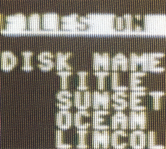
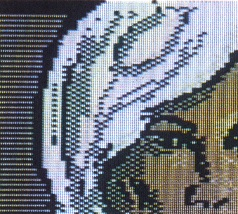
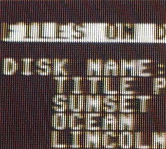
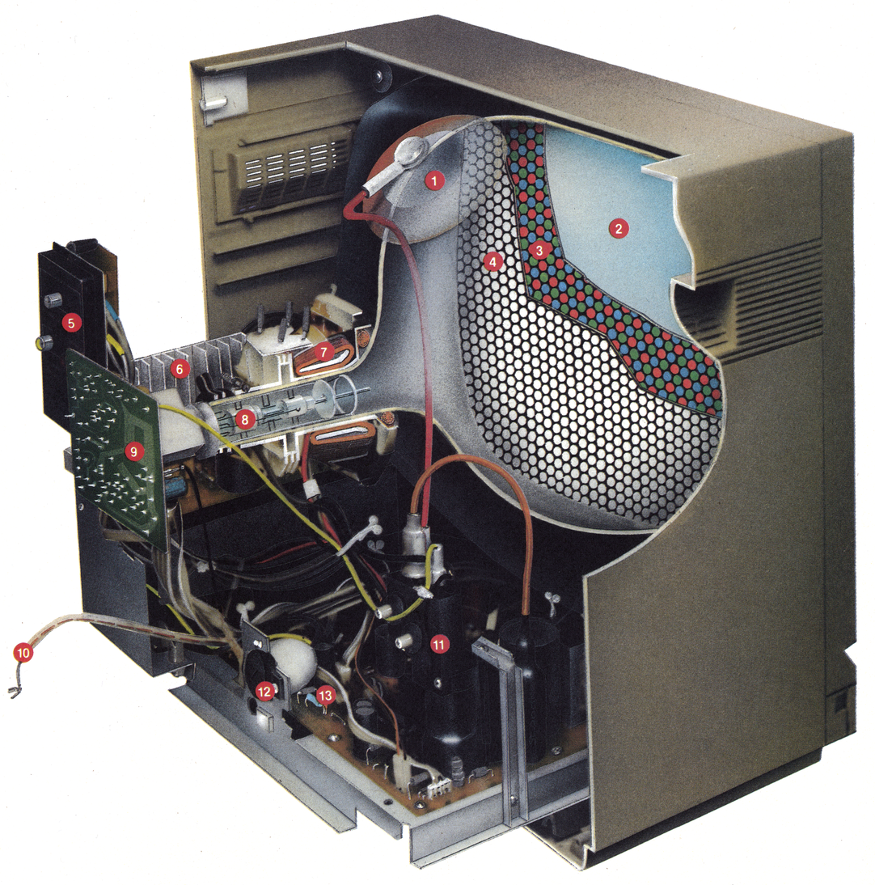
| 1 | Hochspannungsanschluß der Bildröhre |
| 2 | Glaskolben der Bildröhre (verstärkte Frontscheibe) |
| 3 | Farbtripel Zu einem Farbtripel gehört je ein rotes, grünes und blaues Feld. Die Anzahl der Farbtripel einer Bildröhre ist auch ein Kriterium für die mögliche Bildauflösung. Je mehr Tripel vorhanden sind, um so höher ist die Bildauflösung. |
| 4 | Lochmaske Zu jedem Farbtripel gehört ein Loch der Lochmaske. |
| 5 | Anschlußplatte für die Eingangssignale |
| 6 | Netzteil mit Kühlrippen |
| 7 | Ablenkeinheit Die Elektronenstrahlen werden durch den Strom, der im jeweiligen Moment durch die Ablenkspulen fließt, in eine bestimmte Richtung gelenkt. Auf diese Weise können die Elektronenstrahlen von oben nach unten Zeile für Zeile über den Bildschirm gelenkt werden. |
| 8 | Elektronenkanone Hier werden drei Elektronenstrahlen erzeugt. Je einer für Rot, Grün und Blau. |
| 9 | Bildröhrenanschluß-Platine |
| 10 | Lautsprecherkabel Es liegt hier frei, da sich der Lautsprecher in der abgenommenen Rückwand befindet. |
| 11 | Hochspannungsteil Die Hochspannung für die Bildröhre wird hier erzeugt. |
| 12 | Umschalter für die Netzspannung (110/220 Volt) |
| 13 | Videoverstärker und weitere Elektronik |
So werden die Kanten deutlich
Im Bild 3 sehen Sie ein Rechteck-Signal, das sich aus Grundschwingung und erster Oberschwingung zusammensetzt. Für unser Beispiel entspräche das einer Bandbreite von 4,5 MHz. Wie Sie sehen, ist es gar nicht möglich, bei 100 senkrechten Strichen scharfe Kanten auf dem Bildschirm wiederzugeben. Mit drei Oberschwingungen (Bild 4) kommen wir schon an ein Rechteck-Signal heran. Eine Bandbreite von 10,5 MHz ist dafür bei unserem Beispiel notwendig. Mit einem sehr guten Fernsehgerät ist dies möglich. Mit sechs Oberschwingungen haben wir schon ein nahezu perfektes Rechteck-Signal (Bild 5). Allerdings ist bei 100 senkrechten Strichen dafür schon eine Bandbreite von 19,5 MHz notwendig. Eine solche Bandbreite bieten jedoch nur Monitore. Im Bild 6 sehen Sie die bereits bekannten Bildausschnitte, aufgenommen von dem Monitor Commodore 1701 – eine deutliche Verbesserung gegenüber den Fernsehgeräten.
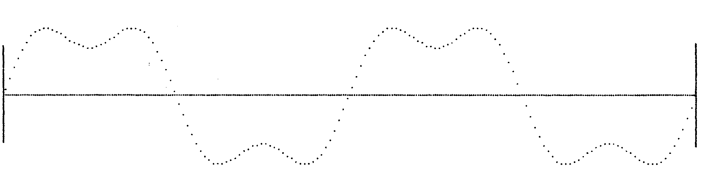
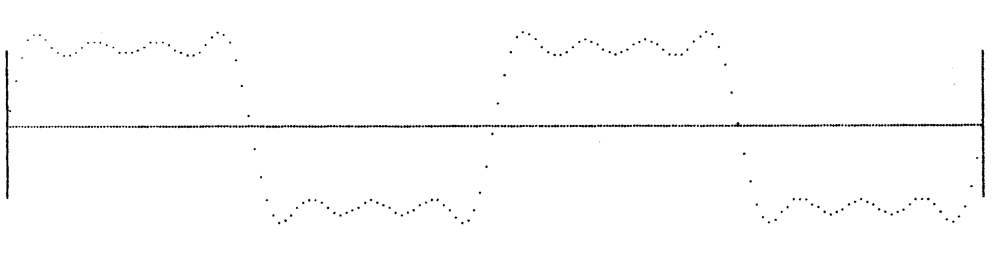
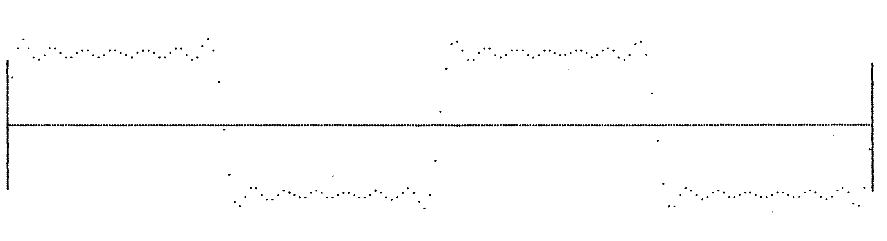
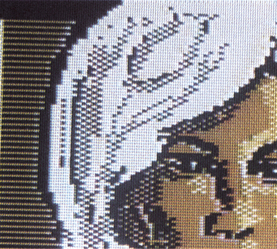
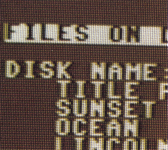
Wenn Sie sich zum Kauf eines neuen Bildschirmgerätes entschließen, so überlegen Sie sich genau, wofür Sie ihren Computer verwenden wollen. Falls Sie ausschließlich an Spielen interessiert sind, so ist ein tragbarer Farbfernseher die beste Lösung. Die Bildschärfe reicht für Spiele aus, wenn ein Videoeingang vorhanden ist, und Sie können das Gerät zusätzlich als normalen Fernseher verwenden. Wenn Sie aber ein Grafikfan sind, dann ist ein Farbmonitor das richtige Gerät für Sie.
Anders ist es, wenn Sie hauptsächlich Textverarbeitung oder Datenverwaltung machen wollen, wobei Sie auf Farbe vollkommen verzichten können. Eine dritte Möglichkeit bietet sich hier an, der Kauf eines monochromen Monitors. Erstens schonen Sie damit Ihre Brieftasche, denn monochrome Monitore sind schon für 300 bis 400 Mark zu haben. Zweitens schonen Sie Ihre Augen. Die Textwiedergabe auf dem Bildschirm ist deutlich schärfer als bei einem Farbmonitor. In den Bildern 7 und 8 können Sie die Textwiedergabe bei 80 Zeichen pro Zeile zwischen einem Farbmonitor und einem monochromen Monitor vergleichen. Falls Sie einen Lichtgriffel verwenden wollen, so sollten Sie sich keinen bernsteinfarbenen Monitor zulegen, da diese nachleuchtende Bildröhren besitzen. Dem Computer werden dadurch falsche Positionsdaten übergeben. Daß viele monochrome Monitore keinen Lautsprecher haben, sollten Sie beim Kauf ebenfalls berücksichtigen.
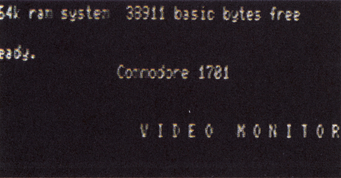
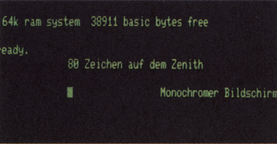
Wenn Sie sich für einen Monitor entschlossen haben, sollten Sie unbedingt prüfen, ob Sie Ihren Computer problemlos daran anschließen können.
Insgesamt scheint allerdings ein tragbarer Farbfernseher mit Videoeingang für den Anfang ein guter Kompromiß zu sein. Achten Sie aber darauf, daß die Bildschirmgröße nicht über 40 cm Bildschirmdiagonale liegt. Sonst wird das Arbeiten in einem Abstand von zirka einem Meter vor dem Bildschirm schnell anstrengend.
(kn)